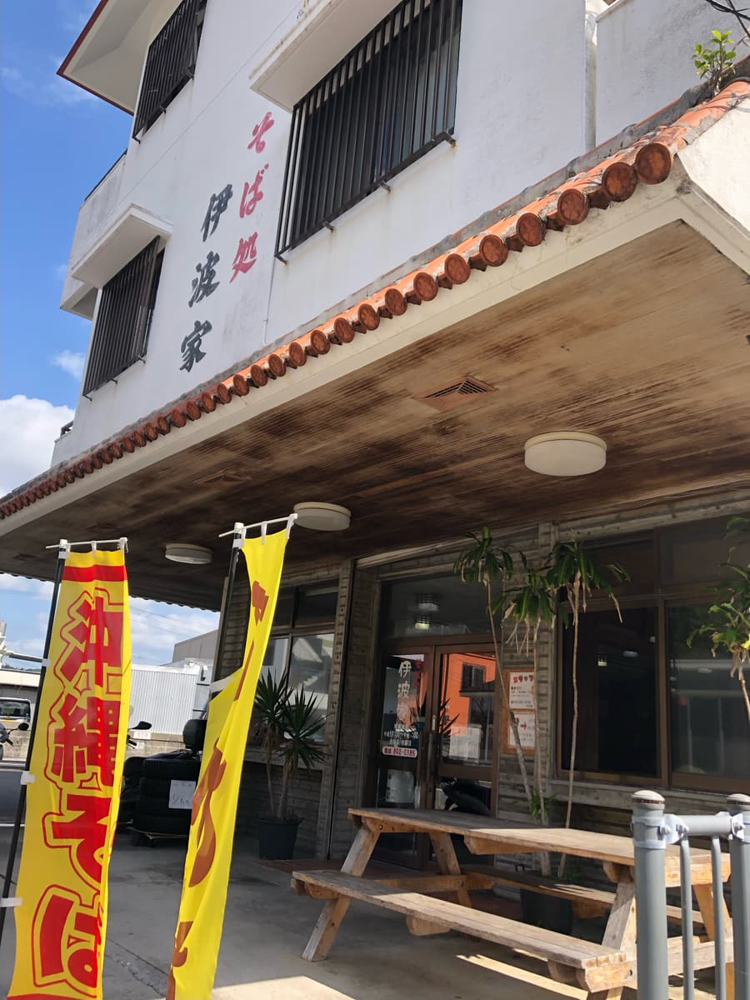
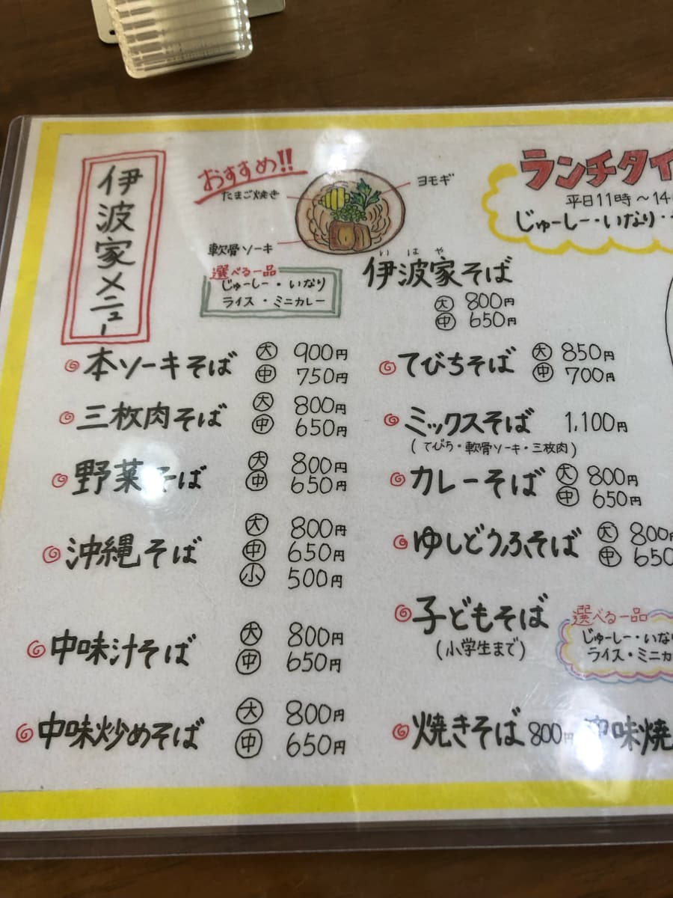
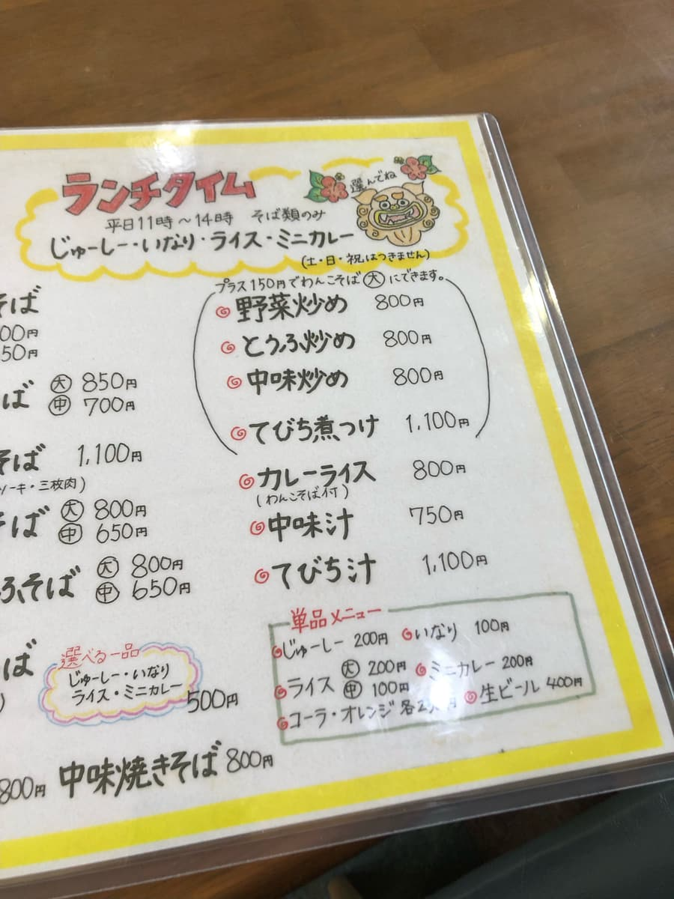
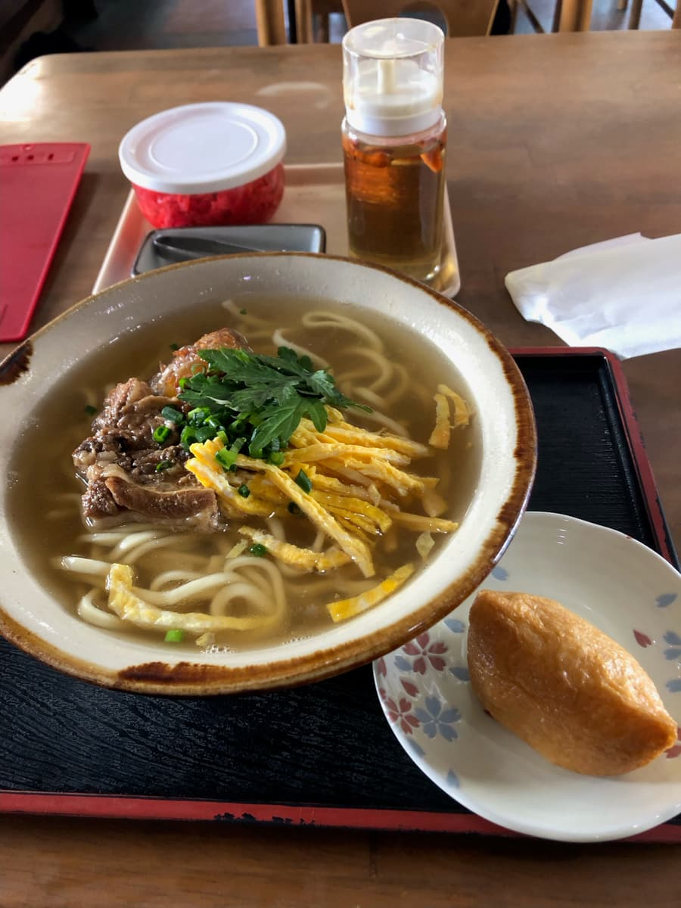
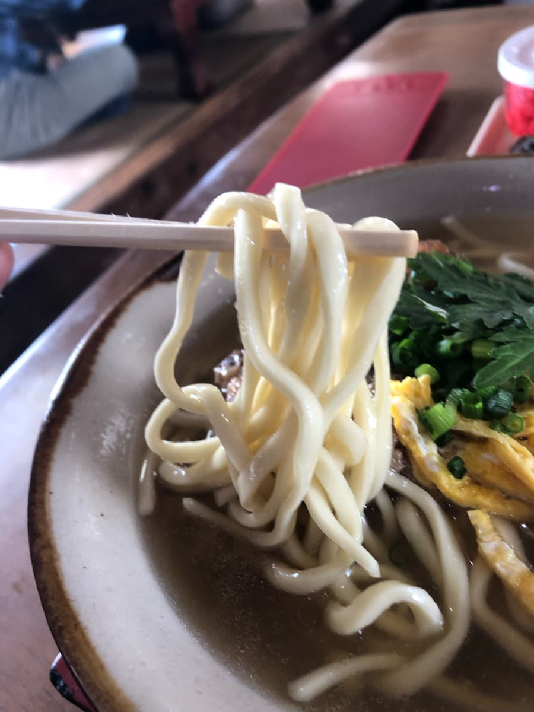

I ate here in February 2024 😄



I went into this shop at lunchtime, and it was quite bustling with local customers 😄 It feels like it's loved by the locals lol
From the menu, I decided to order the “Iha-ya soba,” which shares the shop's name.

First, a sip of the soup. It's a combination of bonito and pork bone, a soup with slightly pronounced pork bone.

Next, I taste the noodles 😆 The noodles are a thick straight type, chewy and just plain delicious.
The toppings include fuchiba (mugwort) too, which is a nice accent 😄 The soft-bone pork ribs (nankotsu soki) are melt-in-your-mouth tender, but they felt slightly sinewy.
As a complimentary item you can choose one from jushi (Okinawan seasoned rice), inari, rice, or mini curry, and this time I ordered inari, but there was a lot of soup too, and I got full.
Rating (9/15): Just plain delicious, and there's plenty of volume. It seems popular with local customers too, so how about trying this shop once?
Noodles: ★★★☆☆（3）
Soup: ★★★☆☆（3）
Toppings: ★★★☆☆（3）